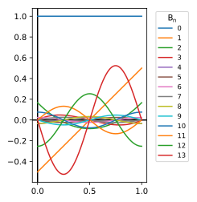

Recurring extraction
By multiplying the exponential generating function by the denominator and comparing terms we get a useful recurrence relation between polynomials: \[G(x,t)(\exp(t)-1)=\sum\limits_{k=0,l=1}^\infty \frac{t^k}{k!}B_k\frac{t^l}{l!}\] The \(l=0\) in the exponential expansion is skipped because it cancels against the \(-1\). Defining \(l+k=n+1\) and using this to replace the \(l\) sum and collect terms: \[G(x,t)(\exp(t)-1)=\sum\limits_{n=0}^\infty \frac{t^{n+1}}{(n+1)!}\sum\limits_{k=0}^n \frac{(n+1)!B_k}{k!(n-k+1)!}\] Remembering the binomial expansion symbol: \[G(x,t)(\exp(t)-1)=\sum\limits_{n=0}^\infty \frac{t^{n+1}}{(n+1)!}\sum\limits_{k=0}^n \binom{n+1}kB_k\]
Looking at our formula for the generating function, this must equal: \[t\exp(xt)=\sum\limits_{n=0}^\infty \frac{x^nt^{n+1}}{n!}\] Making the suitable equation and comparing terms in \(t^{n+1}\): \[(n+1)x^n=\sum\limits_{k=0}^n \binom{n+1}kB_k\] We can separate out the \(B_n\) term to give it terms of the previous polynomials: \[\binom{n+1}{n}B_n=(n+1)B_n=(n+1)x^n-\sum\limits_{k=0}^{n-1} \binom{n+1}kB_k\] We note that the leading term of \(B_n\) is \(x^n\), since the other polynomials are lower order. Tidying: \[B_n=x^n-\sum\limits_{k=0}^{n-1} \binom{n+1}k\frac{B_k}{n+1}\]
We plot the \(B_n\) between 0 and 1, with \(n\) up to 13:
I will show that the polynomials tend for large \(n\) to unit-period trigonometric functions (sine/cosine) in the interval \([0,1]\), multiplied by a large and increasing factor. From the plot, this looks plausible. Also when periodized into \(P_n(x)=B_n(\{x\})\) the resulting functions and their derivatives are smooth, except for \(P_1,P_2\). Initially for small \(n\), the function maxima reduce up to \(n=6\) and then start increasing.